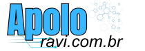

TECNOLOGIA
Artigos e novidades
Um lugar para organizar suas publicações e facilitar a descoberta de novos conteúdos.
Como será a importação ↗
APOLO RAVI TECH
Um novo espaço para compartilhar conhecimento, explorar possibilidades e aproximar pessoas da tecnologia.
Explore o conteúdo ↗Uma nova casa para o conteúdo do seu WordPress.
01 / SOBRE
Bem-vindo à nova apresentação da Apolo Ravi Tech. Esta primeira versão mostra como seu conteúdo pode ganhar uma navegação simples, uma identidade visual própria e espaço para crescer.
Os textos desta demonstração são provisórios. As páginas e publicações originais serão importadas a partir da exportação do WordPress.
02 / EXPLORE
TECNOLOGIA
Um lugar para organizar suas publicações e facilitar a descoberta de novos conteúdos.
Como será a importação ↗NA PRÁTICA
Uma estrutura para apresentar seus projetos com imagens e detalhes do seu trabalho.
Conhecer os próximos passos ↗CONHECIMENTO
Conteúdo organizado para quem quer aprender e encontrar informações com facilidade.
Sobre esta versão ↗03 / EM CONSTRUÇÃO
Esta é uma demonstração navegável do novo site. O logo foi recuperado dos arquivos enviados do WordPress.